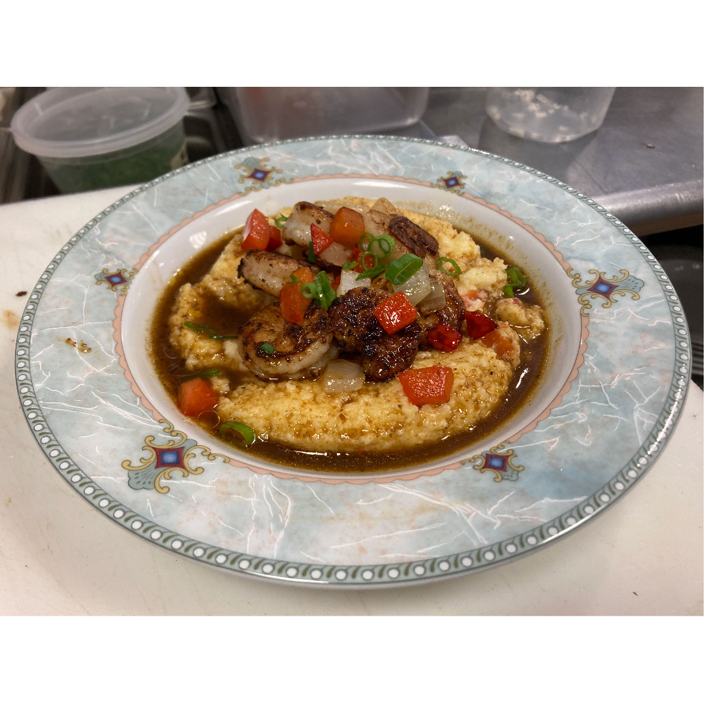

Shrimp and Gri+s

Description
So, Mr. Tipton, how could it take you five minutes to cook your grits, when it takes the entire grit-eating world 20 minutes.
I don't know. I'm a fast cook, I guess.
I'm sorry, I was all the way over here. I couldn't hear you. Did you say you're a fast cook? That's it?! Are we to believe that boiling waters soaks into a grit faster in your kitchen than on any place on the face of the earth?!
Ingredients
- Grits
- Whole Milk
- Butter
- Onion
- Red Bell Pepper
- Smoked Gouda
- Coffee
- Beef jus
- BBQ Sauce
- Flour
Steps
- Dice onions and peppers and saute for 5 min and remove.
- Add milk and bring to a simmer.
- Add grits and cook until done, stirring regularly.
- Add cheese, onions, peppers and mix. Butter/s/p as needed.
- For gravy, you can use some drippings from cooking the shrimp, or use what you got. I had leftover beef jus. Traditionally is ham.
- Simmer in a pan, coffee and jus at 1:1, mix in butter adn flour to thicken as needed.
- Blacken shrimp with seasoning of choice, toss in pan with more peppers and onions.
- Place on top of grits and ladle gravy on top.